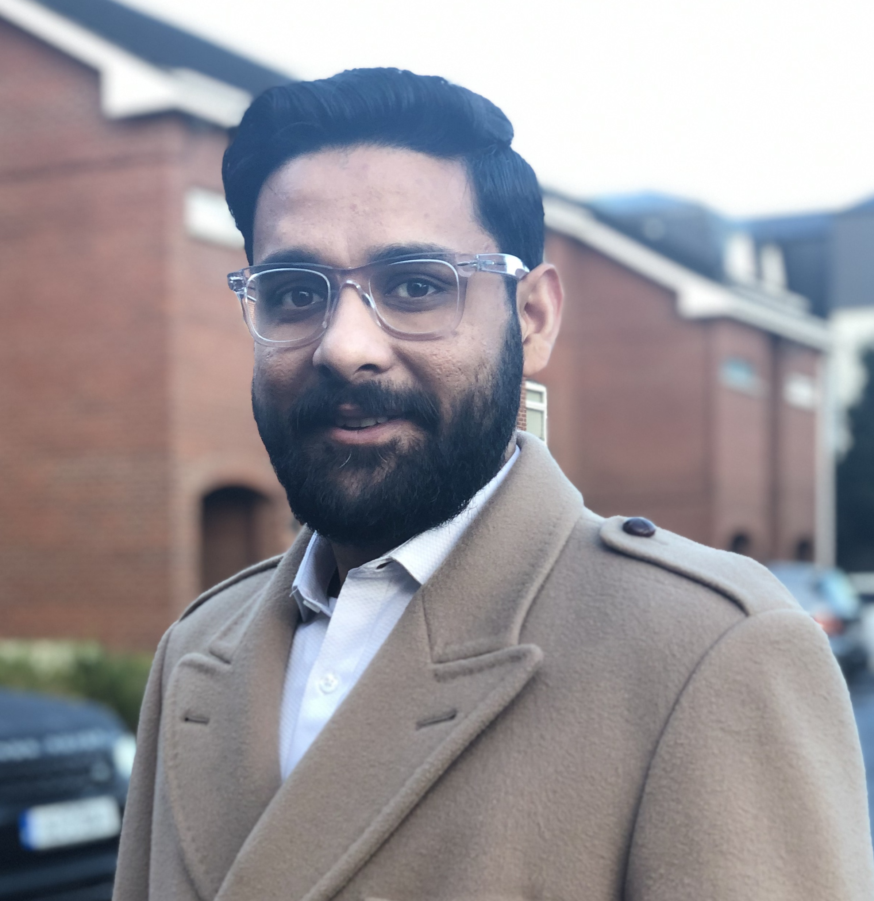

|
I am on the job market this year: research, teaching and EDI statements are available upon request.
|  |
AboutI am a Ph.D. Candidate in the Civil Engineering department at Imperial College London (university webpage), U.K. where I am advised by Prof. Aruna Sivakumar. I conduct research at the intersection of econometrics, decision sciences, travel demand modelling and urban planning. My doctoral work dives deeper into endogeneity and consideration set issues in residential location choice models with a large number of choice alternatives. Previously, I worked at the Center for Transportation Research, while obtaining a Master of Science in Engineering with a specialization in Transportation Engineering [2018] at The University of Texas at Austin, U.S.A. At UT Austin, I worked with Dr. Chandra Bhat and collaborated with Dr. Stephen Boyles [UT], Dr. Ram Pendyala [ASU] and Dr. Patricia Mokhtarian [Georgia Tech]. I also earned a B.Tech. in Civil Engineering [2016] from Indian Institute of Technology, Bombay. At IIT Bombay, I was advised by Dr. Tom Mathew and my thesis addressed lateral traffic flow in heterogeneous traffic conditions. I have been fortunate to participate in a semester exchange program at the Cooper Union for the Advancement of Science and Art, New York. I am a Imperial College Global Fellow awardee [2022] and Turing Scheme research awardee [2022], which allowed me to conduct research at the Technical University of Munich (TUM), Germany. I have also received Department Dixon Scholarship and Wellcome Trust Scholarship for Ph.D. in UK [2019-2023], Texas District Student Fellowship [2017-2018] and Graduate fellowship to undertake graduate studies at UT Austin [2016-2018]. |
References
Aruna Sivakumar (Doctoral advisor, Imperial College London),
Ahmadreza Faghih Imani,
Fangce Guo
|
{kind=link}